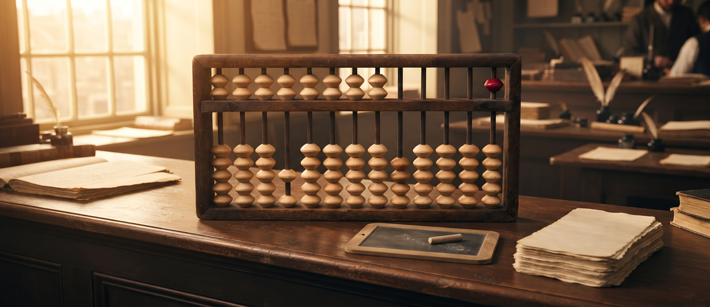

What it does
The tool reads a plain text log file, counts the entries at each log level, and writes the tally to a CSV report with two columns, Log Level and Count, one row per distinct level. It requires Python 3 and pandas, listed in requirements.txt as pandas>=1.5.0; the other imports are from the Python standard library. A successful run prints Analysis report saved to: report.csv, and the README's worked example counts INFO 2, ERROR 1, WARNING 1. An optional --pattern filter keeps only lines containing the given string before counting.

Usage
python3 main.py app.log --output report.csv python3 main.py app.log --output errors.csv --pattern ERROR
Parameters
| Parameter | What the README says |
|---|---|
logfile | Positional, required: path to the log file to analyze |
--output | Path for the CSV report. Default is report.csv |
--pattern | Optional string. Only lines containing it are counted. Default is empty, which counts every line |
-h, --help | Show help and exit |
Stated limits
Each log line is expected to have three fields separated by whitespace: timestamp, level, message. The message may contain spaces. Blank lines are skipped, and lines with fewer than three fields are padded with empty fields. Lines in any other format, for example timestamps that themselves contain a space, will be split at the first two spaces and will not parse as intended. An empty log file, or a pattern that matches nothing, produces a report containing only the header row. A missing log file logs File not found: Log file '<path>' does not exist. and exits with status 1; other processing failures also exit with status 1. This tool has no -d or --delimiter option and no short -o option, despite what earlier versions of its README said. There is no package on PyPI for this tool, and there are no bundled tests; the examples in the README were verified by hand. The licence is the GNU General Public License v3.0, see LICENSE.